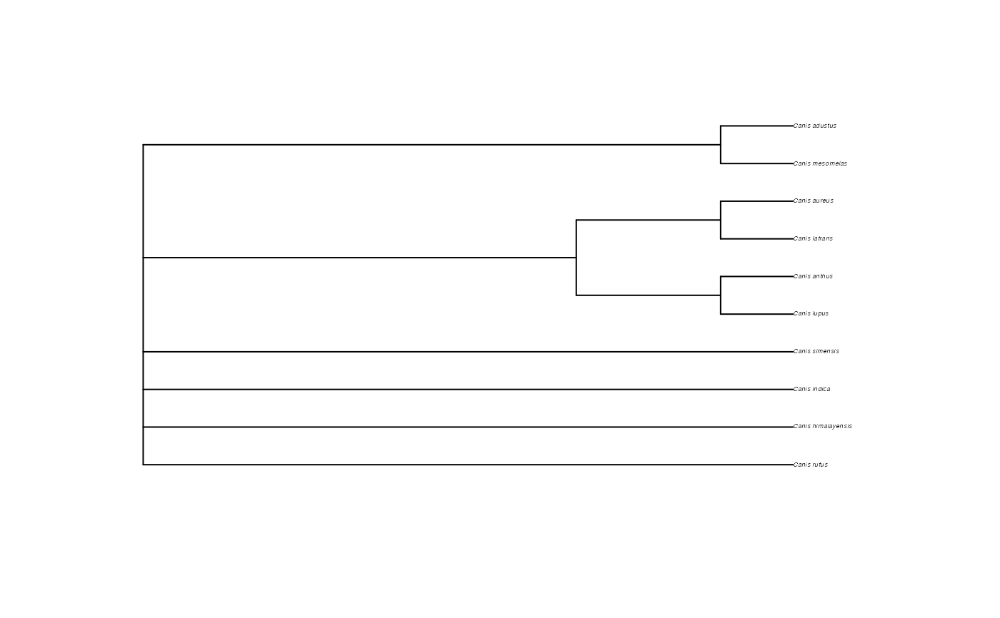

Use this instead of rotl::tol_subtree() when taxa are not in synthesis tree and you still need to get all species or an induced OpenTree subtree
Source: R/opentree_taxonomy.R
get_ott_children.RdUse this instead of rotl::tol_subtree() when taxa are not in synthesis tree and
you still need to get all species or an induced OpenTree subtree
Arguments
- input
Optional. A character vector of names or a
datelifeQueryobject.- ott_ids
If not NULL, it takes this argument and ignores input. A numeric vector of ott ids obtained with
rotl::taxonomy_taxon_info()orrotl::tnrs_match_names()ortnrs_match().- ott_rank
A character vector with the ranks you wanna get lineage children from.
- ...
Other arguments to pass to
get_valid_children().
Examples
# An example with the dog genus:
# It is currently not possible to get an OpenTree subtree of a taxon that is
# missing from the OpenTree synthetic tree.
# The dog genus is not monophyletic in the OpenTree synthetic tree, so in
# practice, it has no node to extract a subtree from.
tnrs <- tnrs_match("Canis")
#> ---> Runnning TNRS to match input names to reference taxonomy (OTT).
#>
|
| | 0%
|
|======================================================================| 100%
if (FALSE) # This is a flag for package development. You are welcome to run the example.
rotl::tol_subtree(tnrs$ott_id[1])
#> Error: HTTP failure: 400
#> [/v3/tree_of_life/subtree] Error: node_id was not found (broken taxon).
# \dontrun{} # end dontrun
ids <- tnrs$ott_id[1]
names(ids) <- tnrs$unique_name
children <- get_ott_children(ott_ids = ids) # or
#>
|
| | 0%
|
|======================================================================| 100%
children <- get_ott_children(input = "Canis")
#> 'input' is not a 'datelifeQuery' object.
#> ---> Phylo-processing 'input'.
#> * 'input' is not a phylogeny.
#> ---> Making a DateLife query.
#> ---> Runnning TNRS to match input names to reference taxonomy (OTT).
#>
|
| | 0%
|
|======================================================================| 100%
#> ---> Working with the following taxon: Canis.
#> DateLife query made!
#>
|
| | 0%
|
|======================================================================| 100%
if (!is.na(children)) {
str(children)
ids <- children$Canis$ott_id
names(ids) <- rownames(children$Canis)
tree_children <- datelife::get_otol_synthetic_tree(ott_ids = ids)
plot(tree_children, cex = 0.3)
}
#> List of 1
#> $ Canis:'data.frame': 10 obs. of 2 variables:
#> ..$ ott_id: int [1:10] 5835572 113383 752755 621168 666235 621176 247331 247341 346723 346728
#> ..$ rank : chr [1:10] "species" "species" "species" "species" ...
#> ... Getting an OpenTree induced synthetic subtree.
#> OpenTree synthetic tree of 'input' taxa is not fully resolved (5 nodes/10 tips).
#> Success!

# An example with flowering plants:
if (FALSE) # This is a flag for package development. You are welcome to run the example.
oo <- get_ott_children(input = "magnoliophyta", ott_rank = "order")
# Get the number of orders of flowering plants that we have
sum(oo$Magnoliophyta$rank == "order")
#> Error: object 'oo' not found
# \dontrun{} # end dontrun